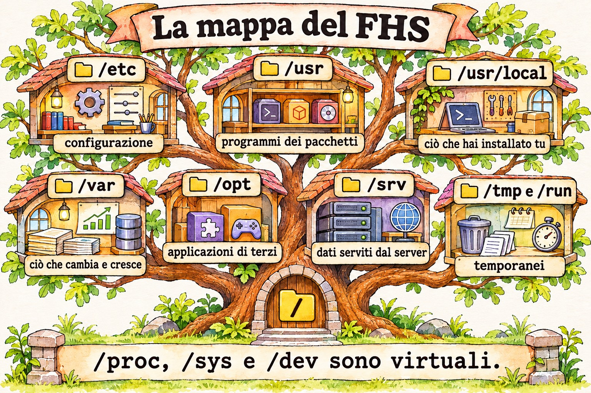
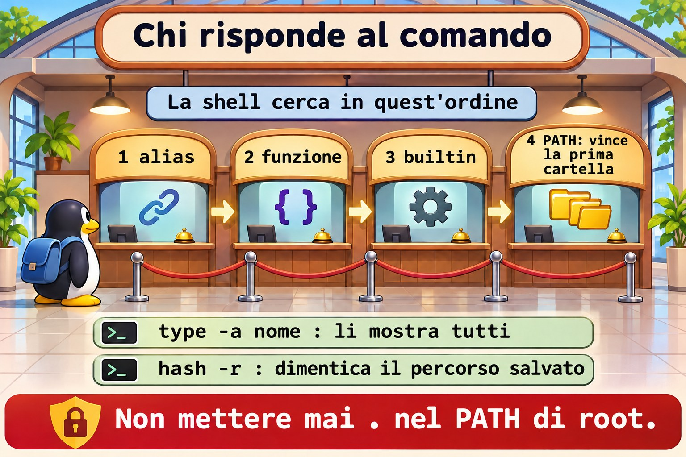
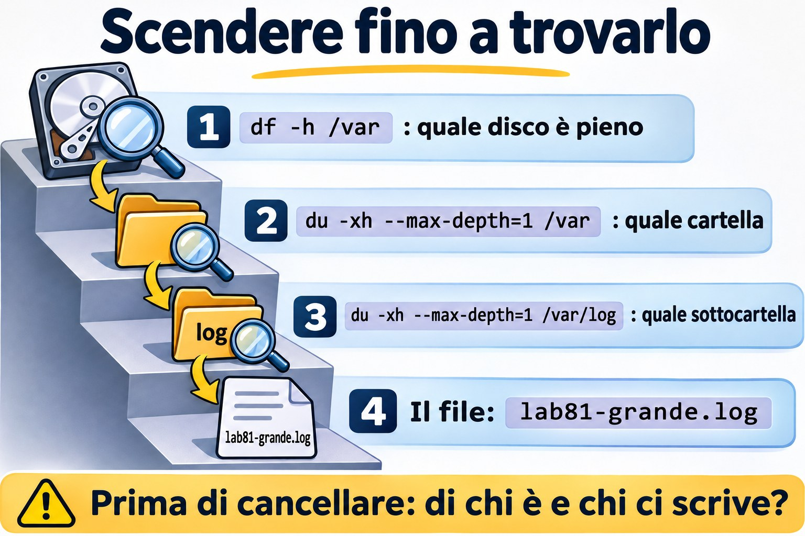

Lezione 8.1 · FHS e dove vive ogni cosa
Su un server che non hai mai visto, il tempo che ci metti ad arrivare alla prima risposta dipende da quanto sai dove guardare. Linux ha una mappa, l'FHS, e chi la conosce trova configurazione, log e dati senza cercare alla cieca. In questa lezione impari quella mappa e scopri quale programma gira davvero quando digiti un comando.
Il cuore di questa lezione: conoscere il ruolo di
/etc,/var,/usr,/opt,/srv,/tmpe/run; distinguere ciò che sta su disco da ciò che è virtuale; decidere dove mettere ogni cosa; scoprire il proprietario di un file; usaretype,which,whereiselocatesapendo che cosa vede ciascuno. Il resto è approfondimento.
| Scheda | |
|---|---|
| Modulo | M8 · File a fondo, lezione 1 di 5 |
| Quando | Settimana 12 |
| Alla fine | Arrivi su un server sconosciuto e trovi configurazione, log, dati e il proprietario di ogni file |
| Prerequisiti | Lezioni 1.3, 6.1 e 6.2 |
| Durata | circa 1h30 |
| Snapshot | m8a1-inicio e m8a1-fim su rocky-lab e debian-lab |
1 · Riscaldamento
Rispondi prima di leggere.
- In quale cartella sta la configurazione della macchina? E i dati che cambiano?
- Un file salvato in
/tmpsopravvive al reboot? - Se
whichnon mostra un comando, vuol dire che non esiste?
2 · Perché conta
| La richiesta | La risposta sbagliata | Cosa provoca |
|---|---|---|
| "Il disco si è riempito" | Cancellare ciò che sembra grosso in /usr | Rompe i programmi. La crescita normale sta in /var |
| "Ho aggiornato e la mia configurazione è sparita" | Dare la colpa al pacchetto | Qualcuno ha modificato in /usr/lib, che appartiene al pacchetto. La modifica doveva stare in /etc |
| "Il report è sparito dopo il reboot" | Cercare nei backup | Era salvato in /tmp, che può essere memoria |
| "Ho lanciato il comando e ha fatto un'altra cosa" | Reinstallare il pacchetto | Un alias o un altro programma, prima nel PATH, ha risposto al suo posto |
"/etc/pve non compare nel backup del disco" | Pensare che il disco si sia guastato | È un file system speciale di Proxmox, non una cartella normale |
3 · Modello mentale
Il server è un palazzo con piani dalla funzione fissa.
/etcè la sala delle norme: pochi fogli, tutti importanti./usrè il magazzino del produttore, che tu non riordini./varè l'archivio di tutti i giorni, che cresce senza sosta./tmpè il tavolo delle brutte copie, ripulito ogni tanto./optè la stanza affittata a terzi./srvè il deposito di ciò che il palazzo consegna a chi viene da fuori./proce/syssono i pannelli di controllo: non conservano nulla, mostrano solo lo stato adesso.
/ raiz; um único tronco, sem letras de unidade
├─ etc configuração da máquina, em texto
├─ usr programas e bibliotecas do sistema; gerenciado por pacotes
│ ├─ bin, sbin, lib /bin e /sbin hoje são links para cá
│ └─ local o que você instalou à mão
├─ var o que muda: log, spool, cache, lib (bancos, estado)
├─ home, root pastas dos usuários e do root
├─ opt aplicações de terceiros, cada uma na sua pasta
├─ srv dados servidos: site, FTP, repositório
├─ tmp, var/tmp temporários; var/tmp dura mais
├─ run estado desde o boot, em memória
├─ boot kernel, initramfs e GRUB
├─ mnt, media pontos de montagem manuais e removíveis
└─ dev, proc, sys virtuais: dispositivos, processos, kernel

Ponte Windows
| In Windows | In Linux | Dove il paragone inganna |
|---|---|---|
C:\, D:\ | Un unico albero, con i dischi montati in cartelle | Non ci sono lettere: un intero disco può essere /var |
C:\Windows\System32 | /usr/bin, /usr/lib | A modificarli sono i pacchetti, non tu |
| Registro, HKLM | /etc | In testo: si può versionare, confrontare e copiare |
C:\Program Files | /usr, /opt, /usr/local | Il pacchetto distribuisce i file per funzione, non in una cartella per programma |
C:\ProgramData | /var/lib, /etc | Configurazione e stato restano separati |
| Visualizzatore eventi | /var/log, journal | Molti log sono semplice testo |
%TEMP% | /tmp, /var/tmp | Condiviso da tutti, con lo sticky bit |
| Indice di Windows Search | locate | Si aggiorna solo quando gira updatedb |
4 · L'essenziale
Dove mettere le cose
| Che cos'è | Dove va |
|---|---|
| Configurazione della macchina | /etc |
| Programma installato a mano, semplice | /usr/local |
| Applicazione di terzi, in un'unica cartella | /opt/NOME |
| Dati che un servizio consegna | /srv/NOME o il percorso standard del servizio, come /var/www |
| Stato e database | /var/lib/NOME |
| Log | /var/log/NOME |
| Temporaneo che può sparire | /tmp |
| Temporaneo che deve reggere al reboot | /var/tmp |
Chi è questo comando
| Voglio... | Comando | Cosa vede |
|---|---|---|
| Sapere cosa eseguirà la shell | type -a nome | Alias, funzione, builtin e PATH |
| Solo il percorso, per uno script | command -v nome | Anche alias e builtin |
| Cercare nel PATH | which nome | Solo i programmi nel PATH |
| Binario, sorgente e manuale | whereis nome | Cartelle standard, senza guardare il PATH |
| Cercare per nome sul disco | locate texto | Il database dell'ultimo updatedb |
Di chi è questo file
| Voglio... | Rocky | Debian |
|---|---|---|
| Pacchetto proprietario del file | rpm -qf ARQUIVO | dpkg -S ARQUIVO |
| Cosa è cambiato dall'installazione | rpm -V PACOTE | dpkg -V PACOTE |
Se nessun pacchetto è proprietario, qualcuno ha messo il file lì: un installer, uno script o una persona.
Temporanei
systemd-tmpfiles pulisce /tmp e /var/tmp in base all'età, in genere 10 e 30 giorni. Controlla con systemd-tmpfiles --cat-config | grep -E ' /(var/)?tmp '. In /run, tutto sparisce allo spegnimento.
Rocky × Debian
| Rocky | Debian | |
|---|---|---|
/tmp in un'installazione nuova | Su disco | In memoria (tmpfs), a partire da Debian 13 |
| Impostazioni dei servizi | /etc/sysconfig | /etc/default |
| Log generale in testo | /var/log/messages | Solo journal, se rsyslog non è installato |
| Autenticazione in testo | /var/log/secure | /var/log/auth.log, con rsyslog |
| Apache | /etc/httpd | /etc/apache2 |
locate | Pacchetto mlocate | Pacchetto plocate |
Parti sempre da findmnt /tmp, invece di dare per scontato.
5 · Lab guidato
Passo 0 · Snapshot e preparazione. Su Proxmox: qm snapshot 201 m8a1-inicio e qm snapshot 202 m8a1-inicio. Su rocky-lab:
sudo dnf install -y mlocate which
mkdir -p ~/lab81 && cd ~/lab81Passo 1 · Girare per la mappa.
ls /
ls -ld /bin /sbin /lib
findmnt -no SOURCE,FSTYPE /
findmnt /tmp
findmnt -t proc,sysfs,tmpfs/bin è un link a usr/bin. I sistemi attuali hanno unito queste cartelle. findmnt separa ciò che è disco da ciò che è virtuale.
Passo 2 · Chi è il proprietario e chi cresce.
rpm -qf /etc/ssh/sshd_config /usr/sbin/sshd
rpm -qf ~/.bashrc
sudo rpm -V openssh-server
sudo du -xh --max-depth=1 /var | sort -h~/.bashrc non ha proprietario: è stato copiato alla creazione dell'utente. L'opzione -x di du non attraversa altri file system, e questo fa sì che il totale valga per quel disco.
Passo 3 · Chi comanda sulla configurazione.
systemctl cat sshd | head -n 3
ls /etc/systemd/system | head
ls /usr/lib/systemd/system | wc -lIl pacchetto consegna in /usr/lib. La tua modifica va in /etc, che ha la precedenza. A un aggiornamento, il pacchetto sostituisce ciò che è suo, non ciò che è tuo.


Passo 4 · Chi risponde a un comando.
type -a ls
type cd
which ls
which cd
whereis ls
command -v lstype -a ls mostra l'alias e poi il programma. type cd risponde builtin. which cd fallisce o punta a qualcosa che non è ciò che usa la shell. Per sapere cosa verrà eseguito, lo strumento giusto è type.
Passo 5 · Cercare con un indice.
touch ~/lab81/agulha-no-palheiro.txt
locate agulha-no-palheiro
sudo updatedb
locate agulha-no-palheiro
rm ~/lab81/agulha-no-palheiro.txt
locate agulha-no-palheiro
locate -e agulha-no-palheiroSe il primo locate si lamenta di non trovare il database (mlocate.db o plocate.db), è solo perché updatedb non è ancora girato su questa macchina. Il file nuovo compare solo dopo updatedb. Dopo essere stato cancellato, resta nella lista fino al prossimo updatedb, e -e verifica se esiste ancora.
Passo 6 · Il virtuale.
cat /proc/uptime
cat /proc/sys/vm/swappiness
ls -l /proc/self
df -h /run /dev/shmNiente di tutto questo occupa disco. /proc/self punta al processo stesso che lo legge.
Passo 7 · debian-lab.
sudo apt install -y plocate
findmnt /tmp
ls -ld /etc/default /etc/sysconfig
ls /var/log | head -n 20
dpkg -S /usr/sbin/sshd
systemctl cat ssh | head -n 3Decidi 1
Un fornitore consegna un .tar.gz con programma, librerie e tutto il resto in una cartella. Dove installare?
A) In /usr/bin, così finisce subito nel PATH. B) In /opt/fornecedor, con un link in /usr/local/bin verso l'eseguibile. C) In /root.
Scegli un'opzione prima di continuare.
| Se hai scelto | Risultato | Perché |
|---|---|---|
| A | Rischio | Mescola file senza proprietario nell'area dei pacchetti |
| B | Giusto | Resta isolato, facile da rimuovere, e il comando rimane nel PATH |
| C | Sbagliato | Altri utenti e servizi non vi accedono, e il backup non sempre lo include |
Da ricordare: /usr è dei pacchetti. Ciò che porti tu va in /opt o /usr/local.
Decidi 2
Uno script genera un file intermedio da 5 GB, e il lavoro deve sopravvivere a un reboot. La VM è Debian 13, con 2 GB di RAM. Dove scrivere?
A) /tmp. B) /var/tmp. C) /dev/shm.
Scegli un'opzione prima di continuare.
| Se hai scelto | Risultato | Perché |
|---|---|---|
| A | Fallisce | Qui /tmp è memoria: non ci sta e sparisce al reboot |
| B | Giusto | Sta su disco e dura di più |
| C | Peggio | È sempre memoria |
Da ricordare: controlla con findmnt cosa c'è dietro la cartella.
6 · Rompi e ripara
Guasto 1 · Il comando impostore
mkdir -p ~/lab81/bin
printf '#!/bin/bash\necho "eu nao sou o ls"\n' > ~/lab81/bin/ls
chmod +x ~/lab81/bin/ls
PATH=$HOME/lab81/bin:$PATH
hash -r
ls /etcSintomo: ls risponde un'altra cosa.
Diagnosi: type -a ls mostra tutti i candidati, in ordine. Vince il primo nel PATH.
Riparazione:
PATH=${PATH#$HOME/lab81/bin:}
hash -r
type -a lsNella vita reale: per questo non si mette mai . nel PATH di root. hash -r cancella la memoria della shell su dove si trovava ogni comando.


Guasto 2 · Il disco che si è riempito
sudo dd if=/dev/zero of=/var/log/lab81-grande.log bs=1M count=200 status=none
df -h /varSintomo: l'uso è salito e nessuno sa dire perché.
Diagnosi: scendi, una cartella alla volta.
sudo du -xh --max-depth=1 /var | sort -h | tail -n 4
sudo du -xh --max-depth=1 /var/log | sort -h | tail -n 4Riparazione: sudo rm /var/log/lab81-grande.log. In produzione, verifica prima di chi è il file e se c'è un processo che ci scrive, come visto nella lezione 1.4.
Guasto 3 · Il file sparito (debian-lab)
findmnt /tmp
echo importante > /tmp/lab81.txt
sudo rebootRiconnettiti e lancia cat /tmp/lab81.txt.
Sintomo: No such file or directory.
Diagnosi: se findmnt /tmp ha mostrato tmpfs, il contenuto era in memoria.
Riparazione: ciò che deve durare va in /var/tmp o in una cartella di dati. Ripeti su rocky-lab e confronta il risultato.
Pulizia
rm -r ~/lab817 · Trappole
| Trappola | Cosa succede | Come evitarla |
|---|---|---|
Modificare un file in /usr/lib | Il prossimo aggiornamento lo annulla | Usa /etc e systemctl edit |
Cancellare ciò che sta in /var/lib per guadagnare spazio | Distrugge database e stato | Pulisci /var/log e /var/cache con criterio |
Fidarsi di which | Non vede alias né builtin | Usa type -a |
Aspettarsi un file nuovo in locate | Non compare fino a updatedb | sudo updatedb o find |
Fare il backup di /proc e /sys | Errori e dimensioni senza senso | Escludi i virtuali o usa -xdev |
Dare per scontato che /tmp sia disco | Riempie la memoria o perde dati | findmnt /tmp |
du senza -x | Somma anche gli altri dischi montati | du -x |
Backup solo di /home | Mancano /etc e /var/lib | Elenca cosa è configurazione e cosa è dato |
8 · Quiz
Rispondi senza guardare. Le soluzioni sono alla fine della lezione.
- Qual è la differenza tra
/usr/locale/opt? - Dove cresce ciò che di solito riempie il disco?
- Come scoprire il pacchetto proprietario di
/usr/sbin/sshdin ciascuna famiglia? - Perché
typeè meglio diwhichper sapere cosa verrà eseguito? - Perché
/procnon occupa spazio? - Perché
/var/tmppuò essere meglio di/tmp?
9 · Promemoria
Da sapere a memoria:
| Voglio... | Comando |
|---|---|
| Vedere cosa è montato in una cartella | findmnt /tmp |
| Sapere chi risponde | type -a nome |
| Proprietario su Rocky | rpm -qf ARQUIVO |
| Proprietario su Debian | dpkg -S ARQUIVO |
| Chi occupa spazio | sudo du -xh --max-depth=1 /var | sort -h |
| Aggiornare l'indice | sudo updatedb |
Da consultare:
| Voglio... | Comando |
|---|---|
| Manuale della mappa | man hier, man file-hierarchy |
| Cercare nell'indice | locate texto, locate -e texto |
| Verificare le modifiche a un pacchetto | rpm -V PACOTE, dpkg -V PACOTE |
| Regole di pulizia | systemd-tmpfiles --cat-config |
| Binario e manuale | whereis nome |
Flashcard:
/etc→ configurazione./var→ ciò che cambia e cresce./usr→ dei pacchetti./opt→ terzi, una cartella per applicazione./run→ stato in memoria, dal boot.- Chi viene eseguito? →
type -a.
10 · Checklist e chiusura
- [ ] So dire il ruolo di ogni cartella principale
- [ ] Distinguo disco da memoria e da file system virtuale
- [ ] Decido dove installare e dove scrivere
- [ ] Trovo il pacchetto proprietario di un file in entrambe le famiglie
- [ ] Uso
type,which,whereiselocatesapendo cosa vede ciascuno - [ ] Scendo con
dufino a trovare ciò che ha riempito il disco
Ultimo esercizio, senza guardare la lezione: su debian-lab, scopri il file di configurazione principale di SSH, il pacchetto proprietario, l'eseguibile del servizio e dove stanno i log di accesso.
Snapshot di fine (su Proxmox):
qm snapshot 201 m8a1-fim
qm snapshot 202 m8a1-fim11 · Nella vita reale
Missione, sola lettura. Su un server Linux che amministri (o con autorizzazione), lancia solo:
findmnt -t xfs,ext4,zfs,nfs,nfs4
findmnt /tmp
df -h
sudo du -xh --max-depth=1 /var | sort -h | tail -n 5
ls /opt /srv /usr/local/binDomande a cui rispondere:
- Cosa è disco separato e cosa condivide la radice?
- Quale cartella occupa di più in
/var? - Cosa c'è in
/opte in/usr/local/bin? Ha un proprietario tra i pacchetti? - Su un Proxmox, cosa mostra
findmnt /etc/pve?
Diario: annota cosa metteresti in un backup di quella macchina, oltre a /home.
Domani, senza guardare: disegna l'albero della radice, con una frase per ogni cartella.
12 · Approfondire quando vuoi
man hiereman file-hierarchy: la mappa nella descrizione ufficiale./etc/updatedb.conf: cosa ignora l'indice.etckeeper: versionare/etccon git.tmpfiles.d: creare le tue regole di pulizia./etc/pve: il file system in cluster di Proxmox, che vedrai nell'M17.
DeepTutor (http://10.1.0.149:3782, KB "Curso Linux Sysadmin"):
!explica a diferença entre /usr/local, /opt e /srv!feynman por que /proc não ocupa espaço em disco!quiz Aula 8.1, 5 perguntas sobre o FHS
Soluzioni commentate
Riscaldamento
- In
/etcla configurazione, e in/vari dati che cambiano. - Dipende. Su disco, può sopravvivere fino alla pulizia per età. In tmpfs, sparisce.
- No. Può essere un builtin, un alias o una funzione, oppure stare fuori dal PATH.
Quiz
/usr/localsegue la struttura del sistema (bin,lib) e accoglie cose piccole installate a mano./opttiene ogni applicazione nella sua cartella.- In
/var, soprattutto/var/log,/var/libe/var/cache. rpm -qf /usr/sbin/sshdedpkg -S /usr/sbin/sshd.- Perché
typefa parte della shell e vede alias, funzioni e builtin, che vengono considerati prima del PATH. - Perché è generato al momento dal kernel e non esiste su disco.
- Perché di solito sta su disco, non viene svuotato al reboot e ha una scadenza più lunga.